sunny.gifpartly-cloudy.gifovercast.gifcloudy.gif
rain.gif
sun-shower.gifthunderstorm.gifsnow.giffog.gif
19 顆．檔案 160×160．透明底．無限循環（此頁以 80px 顯示）
圖示是白色的，換底色可以確認透明去背的邊緣狀況。

sunny.gifpartly-cloudy.gifovercast.gifcloudy.gif
rain.gifsun-shower.gifthunderstorm.gifsnow.giffog.giftemperature.gifumbrella.gif
humidity.gif
uv.gifaqi-good.gifaqi-moderate.gifaqi-sensitive.gifaqi-unhealthy.gifaqi-very-unhealthy.gifaqi-hazardous.gif